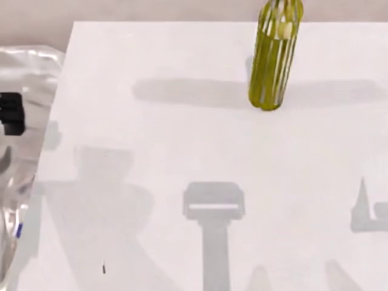
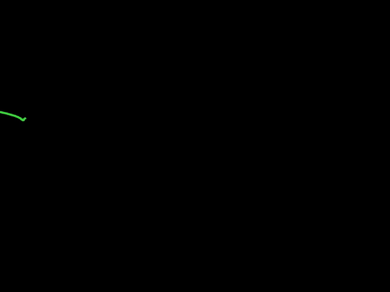
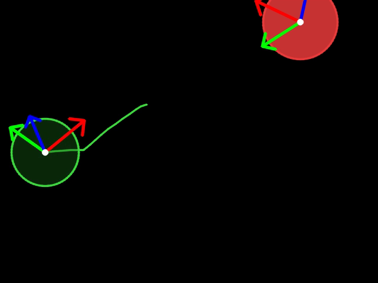
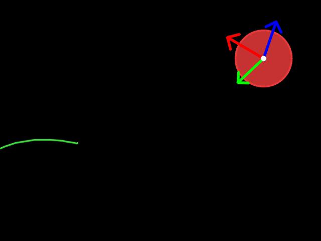
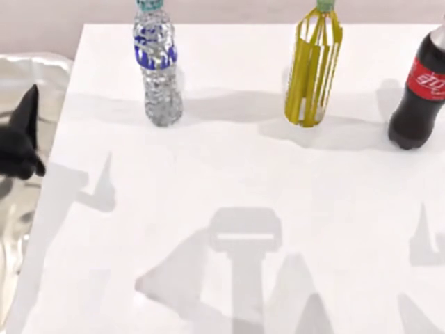
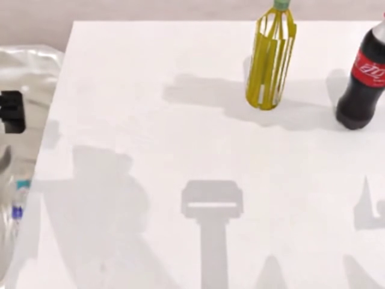
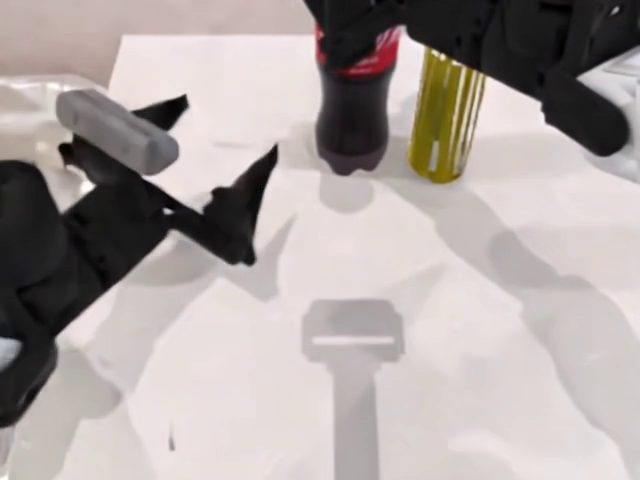
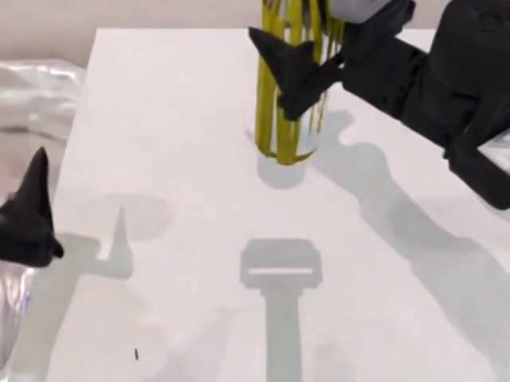
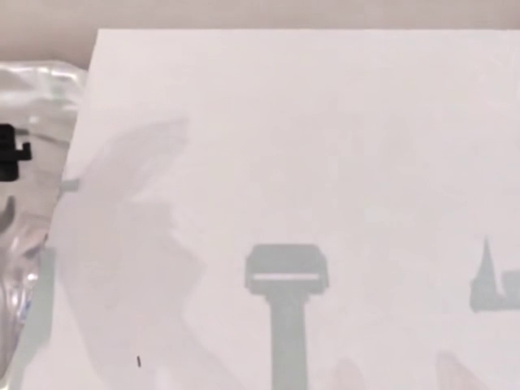
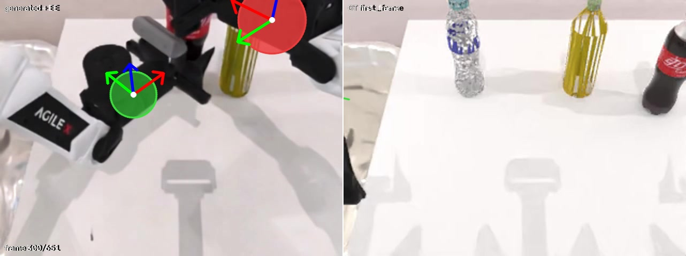

Control-video-to-video
WorldArena
Track 1 Transfer
先把 EEF 轨迹投影为 2D 控制视频，再把 control 与 target 作为两个对齐的视觉项交给同一个 Cosmos3-Nano。它不是 ControlNet，而是 in-context visual conditioning。

Projected control as a visual language
两条视觉轨，
在同一时间轴汇合
绝对 EEF 状态先经过固定相机几何变成黑底 control raster。训练将 control 和真实 RGB 同步解码；推理则用 WorldArena 轨迹生成 control，再让模型补全外观和动力学。
Control 指定“末端应该在哪里、朝向如何、是否抓取”；模型负责把这些符号翻译成连贯的真实世界视频。
transfer_robotwin_nano.py:4-31,175-251 · transfer_robotwin_repro.toml:25-66 · build_transfer_inputs.py:91-168
Control renderer laboratory
3D EEF 状态变成
可学习的 2D 符号
WXYZ 位姿经固定 D435 外参和 pinhole 投影落到 camera plane。圆盘中心编码位置，半径编码相对深度，亮度/透明度编码 grasp，RGB gizmo 编码朝向，轨迹显示未来 [t,t+25]。
它不是 segmentation mask，也不是 learned feature map；它是人为设计、跨训练和 Track1 复用的视觉语言。
visualize_ee_projection.py:53-63,97-160,330-433 · batch_control_videos_test.py:78-87,112-158
Synchronized training pair
同一时刻，
两种视觉表达
Control 与 target 使用同一帧索引同步编码，并通过相同的 resize-to-cover 和 center crop。97 个 RGB frame 经共享 Wan2.2 VAE 变成 25 个对齐 latent time steps。
robotwin_transfer_dataset.py:288-339 · transfer_control_transform.py:124-195 · utils.py:41-54
clean ×97



RGB ×97





Full in-context architecture
Transfer 模型：两条 vision item，共享一套生成栈
Control 没有旁路网络。它和 target 一起经过共享 VAE、vae2llm、36 层 MoT；只有 target future 通过 llm2vae 预测速度并承担 loss。
transfer_robotwin_nano.py:84-115,175-251 · packers.py:291-335 · Qwen3-VL-8B-Instruct.json:15-21
Visibility and supervision
Control 全 clean，
loss 只属于 target future
Text query 只读取 causal text；control 与 target 作为 generation query 可读取完整的 text/control/target context。Condition mask 中 1 表示 clean，flow loss 使用其补集。
训练存在 10% caption dropout，但没有显式 control-item dropout；无 control 分支是在推理期为 control-CFG 构造。
模型不会重建 control。它只把 control 当作时空参照，预测 target noisy future 的速度。
attention.py:88-145 · rectified_flow.py:176-210 · flow_matching.py:18-90 · transfer_transforms.py:53-93
Two-stage guidance
先强化 control，
再做 text-CFG
每个 denoising step 先比较含 control 与去掉 control 的两个条件分支，得到 control-guided velocity；随后才与 unconditional-text 分支混合，最后交给 UniPC 更新。
两种 CFG 不是并列加权，也不是 text 先执行；实现中的顺序直接决定最终速度。
transfer.py:274-374,551-567 · omni_mot_model.py:2486-2496 · args.py:782-850
97-frame autoregressive transfer
stride 96：上一个结果成为下一个 appearance anchor
每窗 97 帧，其中 1 帧是 target 条件，96 帧是新未来。末窗 control 不足时沿时间反射/重复补齐；输出去掉重叠首帧并裁回 exact T。
transfer.py:43-54,377-596 · vision.py:212-230 · build_transfer_inputs.py:13-35,254-267
Episode 593 · overlay evidence
把 control 直接叠到
生成视频上检查
Episode 593 的 control、生成结果与 overlay 均为 652 帧、25 fps。默认播放 overlay；可切换到纯生成视频或纯 control，逐帧检查投影轨迹与机械臂末端是否一致。

visualize_ee_projection.py:97-160,330-433 · transfer.py:571-596 · pack_track1_submission.py:180-240